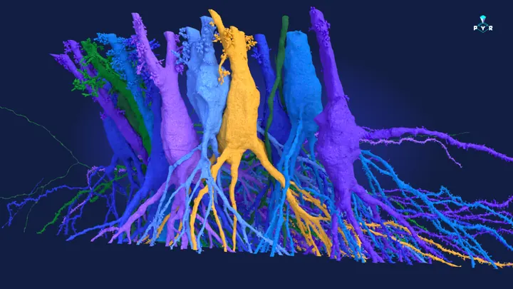
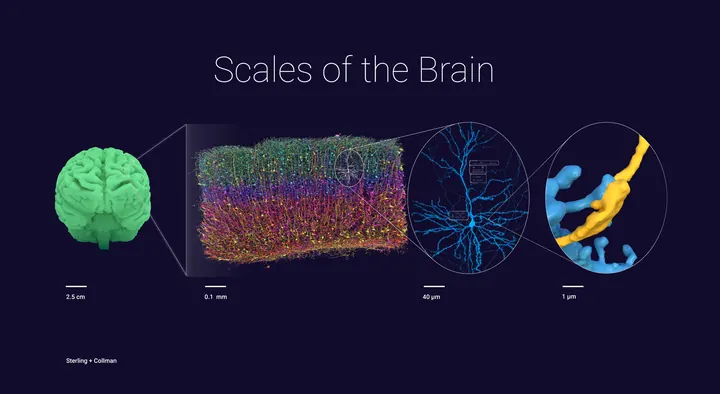
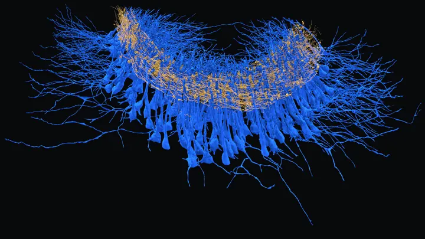

Seung Lab
EyeWire II and Pyr
Games where players proofread real connectomes: the mouse retina in EyeWire II, the hippocampus in Pyr. I design the game, the tools and the community around it, and I write a lot of the code.
Executive Director, Eyewire Crowdsourcing Specialist, Princeton University
Status: mapping the brain
Counted from GitHub every morning.
Now

Seung Lab
Games where players proofread real connectomes: the mouse retina in EyeWire II, the hippocampus in Pyr. I design the game, the tools and the community around it, and I write a lot of the code.
FlyWire
Design, renders and public tools for FlyWire, the first complete wiring diagram of an adult fly brain, and its sequel the BANC, which adds the nerve cord.

For everyone
Real reconstructed neurons for people who have never seen one, from kindergarten up. It runs on a museum wall in Boston and as a site anyone can open.

Renders
Figures and videos for connectomics papers: CA3 in the hippocampus, the mouse retina with calcium imaging played back on it, MICrONS cortex, the BANC.
What's a brain?
Real data, drawn in your browser: a whole human brain, a mouse brain, a whole fly. All of it lives at whatisabrain.com.
White matter explorer
All 360 areas of the HCP parcellation and the measured white matter cables that reach each one. Click any part of the cortex and it tells you what you hit.
Mouse
Watch a signal leave a cell body and reach every region its axon touches. Every line is a real axon.
Fly
The FlyWire connectome in 3D: every neuron and synapse of the fruit fly brain, open to anyone.
Also
An interactive globe and timeline of civilizations, their changing borders, inventions, and ideas. It is live right here: press play and watch five thousand years go by, or drag the globe.
Play
Each one is the real, live site, running inside this page. Pick one from the list, or press ▶ on any card.
Choose something on the left.
Be the Fly is a good place to start.
Built with my kids
My daughters Sophia, 7, and Cora, 5, dream up the games and we build them together. Everything lives at sophieandcora.com. On this page find a host of reading and math games that are all free.
Ages 4 to 8
Build words, read words, find rhymes, and pop sight words. Earn stars and fill your sticker book!
Ages 5 to 8
Thirty stories to read all by yourself, from tiny tales to chapter books.
Ages 3 to 5
Every letter with its pictures, and a game about first sounds.
Under construction
A grey 3D island. Read the words and paint it back to life!
Ages 4 to 8
Block Math and Ten Drop: add, take away, times and share with towers of blocks, then fill the falling rows to ten.
Under construction
Climb from number lines and fractions all the way to physics and the maths behind AI.
By Sophia
Collect the gems while evading the flames of these four funny dragons!
By Coco
A magical unicorn. Infinite rainbow poop.
By Sophia
Collect gems, dodge sharks, and find the bedazzled octopus!
By Coco
Explore Magic Meadow. Collect stars. Watch out for the wolf!
Code
All my public GitHub repos, pulled every morning. Projects that share ideas pull together, and each dot grows with this year's commits. Drag a dot, hover to read, click to open.
Gallery
Every cell in these was reconstructed from electron microscopy, mostly by people playing games. Click any one to see it large.
Art
Art I produced with illustrators, artists and students: a Nature cover, concept art, the characters of Pyr, and posters for a zoo.
Nature cover
The cover of Nature's fly connectome issue, 3 October 2024.
Concept art
A concept render of the fly brain.
Live · try it
The character creator for Pyr. Pick a look, an outfit and a lab to stand in. Open full size ↗
Franklin Park Zoo, Boston
An exhibit at Zoo New England produced by Eyewire, of Princeton University's Seung Lab, with illustration students at Massachusetts College of Art and Design. It invites visitors to venture into the brains of animals, with a poster series on the uniqueness of a dozen species at the zoo.
Publications
From my ORCID record, with the journal version of each paper in place of its preprint. Connectomics papers have long author lists, so each shows its first author.
Talks, exhibitions, press
TEDxKyoto
On blending machine intelligence with crowdsourced human intellect to map the brain.
Among the nerds who matter.
NBC News
There is no limb she won't go out on, no dendrite she won't explore, if she thinks it will lead to a breakthrough.
The Boston Globe
She's a badass.
Jeff Bezos
The New York Times Wired National Geographic Nature NPR Smithsonian NBC News Scientific American Slate Vsauce3 My Forbes column
About
I am the Executive Director of Eyewire, the game where players all over the world trace neurons in the retina, and a Crowdsourcing Specialist at Princeton University. I've spent the past 15 years working with Sebastian Seung, first at MIT and now at Princeton University. We've created Eyewire, FlyWire, and now the next chapter of citizen neuroscience: Pyr.
I have published in Nature, Cell and Nature Methods, written about neuroscience and data visualization for Forbes, and advised the White House Office of Science and Technology Policy on innovation methods. Forbes put me on its 30 Under 30 list in 2015, and Fast Company called me an Innovation Agent. I also founded the TEDx Music Project.
Most evenings I build things with my two kids: games, a robot, a site full of jokes. They have strong opinions and they are usually right.